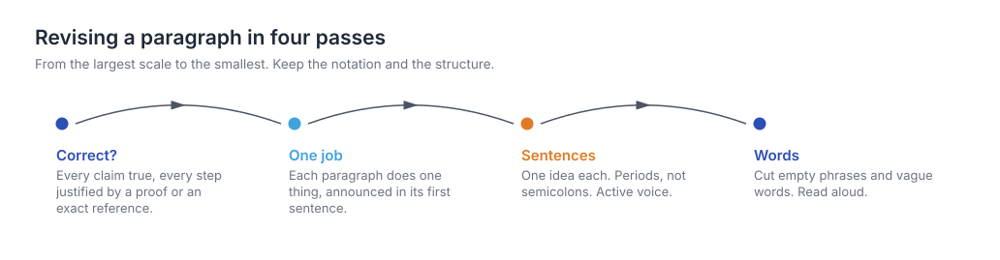

Guides · Writing
Revising paragraphs, step by step
A method to revise a paragraph without losing your voice. Check the content first, then the structure, then the sentences, then the words. Keep your notation and your structure intact.
Path · Writing your first paper · step 5 of 7
Next in this path: What older papers teach about writing →
Most of the quality of a paper comes from revision. The first draft says what you mean. The revision makes the reader understand it. Revise in passes, from the largest scale to the smallest, and do one thing at a time.
Pass 1: is it correct?#
Before improving a single sentence, check the mathematics or the science.
- Is every claim true as stated, with all hypotheses?
- Is every step justified, by a proof or by an exact reference?
- Are the definitions used exactly as they were defined?
There is no point in polishing a wrong sentence. When you revise someone else's text, this is also where your main responsibility lies: correct the content, and only then the language.
Pass 2: what is the paragraph for?#
A paragraph has one job. Write that job in a few words in the margin: "defines the map", "explains why the hypothesis is needed", "states the main result". If you cannot, the paragraph does two things and should be split. If two consecutive paragraphs have the same job, merge them.
The first sentence of a paragraph should announce its job. The reader who only reads first sentences should still follow the argument.
Pass 3: sentences#
- One idea per sentence. Split long sentences at "and", "which" and "where".
- Periods, not semicolons. A semicolon usually joins two sentences that would be clearer apart.
- Put the new information at the end. "The map $f$ is injective" when $f$ is known. "There is a unique injective map, which we denote by $f$" when $f$ is new.
- Prefer the active voice. "We prove" rather than "it is proved".
- Keep related words together. Do not put a long clause between the subject and the verb.
Pass 4: words#
Cut words that carry no information:
| Instead of | Write |
|---|---|
| It is worth noting that $X$ | $X$ |
| In order to | To |
| Due to the fact that | Because |
| A number of | Several, or the exact number |
| It can be shown that $X$ | $X$, followed by the proof or a reference |
| Plays a crucial role in | Is used in, or say exactly how |
| In this regard, moreover, furthermore | Often nothing at all |
Watch for vague words: certain, some, various, interesting, important. Replace them by the precise object or property.
What not to change#
When you revise your own text after some time, or a co-author's text, keep what works:
- Keep the notation. Changing notation during revision introduces errors everywhere else in the paper.
- Keep the structure of sections and results unless it is wrong. Revision improves sentences, it is not a rewrite.
- Keep the author's voice. The goal is clarity, not a different style. A paragraph should still sound like its author after revision.
An example#
The paragraph below is invented.
Before. It is worth noting that, in order to prove the main result, which plays a crucial role in Section 4, we will need a certain number of preliminary results; in particular, we will need to show that the operator $T$, which was defined in Section 2 and which is bounded, has a closed range, and this will be done by using a compactness argument.
After. The main result needs one preliminary fact. The operator $T$ of Section 2 has closed range. We prove this with a compactness argument.
The content is the same. The revised version has three sentences, one idea each, and no empty phrase.
Read aloud#
The last pass is to read the paragraph aloud, slowly. You will hear the sentences that are too long, the repeated words and the missing transitions. If you run out of breath, the sentence is too long.
Checklist#
- The content is correct and every step is justified.
- Each paragraph has one job, announced in its first sentence.
- Each sentence has one idea.
- Empty phrases and vague words are gone.
- Notation and structure are unchanged.
- The paragraph reads well aloud.
Discussion
Questions, corrections and your own experience are welcome. Comments live in the forum, on GitHub Discussions, with Markdown and LaTeX.